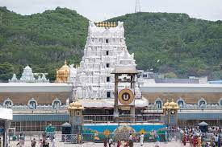
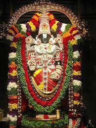
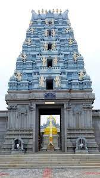
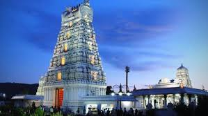
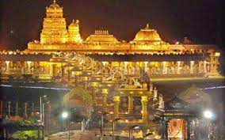
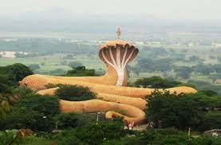
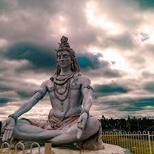

Tirupathi Balaji Temple...
The Sri Venkateswara Swami Temple is a Hindu temple situated in the hill town of Tirumala at Tirupati in Tirupati district of Andhra Pradesh, India. The Temple is dedicated to Venkateswara, a form of Vishnu, who is believed to have appeared on the earth to save mankind from trials and troubles of Kali Yuga. Hence the place has also got the name Kaliyuga Vaikuntha and the deity here is referred to as Kaliyuga Prathyaksha Daivam. The temple is also known by other names like Tirumala Temple, Tirupati Temple and Tirupati Balaji Temple. Venkateswara is known by many other names: Balaji, Govinda, and Srinivasa.[3] The temple is run by Tirumala Tirupati Devasthanams (TTD), which is under control of Andhra Pradesh Government. The head of TTD is appointed by Andhra Pradesh Government.
The temple is one of the Pancha Kshethram where Maha Lakshmi was born as Bhargavi - the daughter of Maharishi Bhrigu. The other four temples of the Pancha Kshethram are Sarangapani temple, Kumbakonam, Oppiliappan temple, Nachiyar Koil and Sundararaja Perumal Temple, Salem.
Tirumala Hills are part of Seshachalam Hills range. The hills are 853 metres (2,799 ft) above sea level and comprise seven peaks, representing the seven heads of Adisesha. The temple lies on the seventh peak—Venkatadri, on the southern banks of Sri Swami Pushkarini, a holy water tank. Hence the temple is also referred to as "Temple of Seven Hills".[4] Tirumala town covers an area of about 10.33 sq mi (26.75 km2).
The Temple is constructed in South Indian architecture and is believed to be constructed over a period of time starting from 300 CE.[5] The Garbhagruha (Sanctum Sanctorum) is called Ananda Nilayam. The presiding deity, Venkateswara, is in standing posture and faces east in Garbha Gruha. The temple follows Vaikhanasa Agama tradition of worship. The temple is one of the eight Vishnu Swayambhu Kshetras and is listed as the 75th Divya Desam. The Temple premises have two modern Queue complex buildings to manage the pilgrim crowd, Tarigonda Vengamamba Annaprasadam complex for free meals to Pilgrims, hair tonsure buildings and a number of pilgrim lodging sites.
It is one of the richest temples in the world in terms of donations received and wealth.[6][7][8]
There are several legends associated with the manifestation of the deity in Tirumala. According to one legend, the temple has a murti of Venkateswara, it is believed, which shall remain here for the entire duration of the present Kali Yuga
History OF Temple..
Medieval history
The first recorded endowment was made by Pallava queen Samavai in the year 966 CE. She donated many jewels and two parcels of land (one 10 acres and other 13 acres) and ordered to use the revenues generated from that land for the celebration of major festivals in the temple.[13] The Pallava dynasty (9th century), the Chola dynasty (10th century), and Vijayanagara pradhans (14th and 15th centuries) were committed devotees of Venkateswara. The temple gained most of its current wealth and size under the Vijayanagara Empire, present-day Karnataka state, with the donation of diamonds and gold.[14] In 16th century, Vijayanagara Emperor Krishnadevaraya was a frequent donor and visitor to the temple. His donations of gold and jewels enabled the Ananda Nilayam (inner shrine) roofing to be gilded. On 2 January 1517, Krishnadevaraya installed his own statue in the temple.[15]
After the decline of Vijayanagara Empire, rulers from states such as the Kingdom of Mysore and the Gadwal Samsthanam worshipped as pilgrims and donated ornaments and valuables to the temple.[citation needed] Maratha general Raghoji I Bhonsle set up a permanent administration for the conduct of worship in the temple. He donated valuable jewels to the Lord which are still preserved in a box named after him.[16] Between 1320 CE and 1369 CE, idols of Ranganathaswamy Temple, Srirangam were brought to this temple for safe keeping.[15][better source needed]
Ramanujacharya's visits
In the 11th and 12th centuries, Ramanujacharya visited Tirupati thrice. On the first occasion, he spent a year with his uncle, Tirumalai Nambi, learning the esoteric meaning of Ramayana. His second visit was for settling a dispute that arose between the Saivites and Vaishnavites regarding the nature of the image set up in the Tirumala temple.[17] During the last visit, which was at an advanced old age of 102 years, the acharya installed the image of Govindaraja and laid the foundations of the present town of Tirupati.[14] Ramanuja streamlined the rituals at Tirumala temple according to Vaikanasa Agama tradition and introduced the recitation of Naalayira Divya Prabandham. He also set up Tirupati Jeeyar Mutt in 1119 AD in consultation with Tirumalai Ananthalwan to institutionalize service to the deity and supervise the temple rituals. The Jeeyars to this day ensures that the rituals ordained by Ramanuja are observed.[18][19][20]
Modern history
Swami Pushkarni of Tirumala
See also: Establishment and legislative setting of TTD
After the end of Vijayanagara Empire, the temple went into the hands of Golconda in July 1656 and then it was under the French for a short period of time and under Nawab of Carnatic till 1801 CE. With the advent of British during the early 19th century, the management of the temple passed to hands of East India Company, who accorded special status to temple and avoided interference in temple activities.[21] Madras government passed Regulation seven of 1817, which passed the temple to Board of Revenue through collector of North Arcot District.[21] In 1821, Bruce, the then East India company commissioner for Chittoor district, had drawn rules for the management of Temple which is referred to as Bruce's Code.[21] The 7th Nizam of Hyderabad, Mir Osman Ali Khan donated ₹8,000 to the temple.[22]
In 1843, the East India Company transferred the Administration of Temple along with other Temples in Tirupati to Mahants of Hathiramji Muth, who acted as Vicaranakartas. It was under the rule of Mahants for six generations until 1933 when Tirumala Tirupati Devasthanams was formed as a result of the TTD Act in 1933.[23] The Act of 1933 was superseded by Madras Hindu Religious and Charitable Endowment Act of 1951.[24] Again in 1966, the temple was placed under direct control of Andhra pradesh State Endowments Department, with Andhra Pradesh Charitable and Hindu Religious Institutions and Endowments act.[24] In 1979, act of 1966 was rolled back with new Tirumala Tirupati Devasthanams act, where temple administration was vested to a committee consisting of Executive officer, Chairman and two other members nominated by Government of Andhra Pradesh.[24] The temple is run by body Tirumala Tirupati Devasthanams (TTD) which is under control of Andhra Pradesh Government. The head of TTD is appointed by Andhra Pradesh Government. The revenue from this shrine is used by Andhra Pradesh government.[25][26]
The temple bears as many as 640 inscriptions in Kannada, Sanskrit, Tamil, Telugu languages.[27] There is a unique collection of about 3000 copper plates on which the Telugu Sankirtanas of Tallapaka Annamacharya and his descendants are inscribed.[28][29] This collection forms a valuable source of material for a historical linguist in Telugu apart from its importance to musicologists.[
THE SEVEN HILLS
The Seven Hills
The temple is located on seven hills.[69] The presiding deity is also referred to as Sapthagirisha[69] or Lord of Seven hills.[70] It is believed that seven hills, also referred to as Saptagiri, represent the seven hoods of Adisesha. The seven hills are as follows:[69]
A statue of Hanuman in prayer pose near Alipiri gate in Tirumala
Vrushabhadri—Hill of Vrishabasura, who was killed by Srinivasa
Anjanadri—Hill of Hanuman.
Neeladri—Hill of Neela Devi
Garudadri or Garudachalam—Hill of Garuda, the vahana of Vishnu
Seshadri or Seshachalam—Hill of Sesha, the dasa of Vishnu
Narayanadri—Hill of Narayana. Srivari Padalu (footprints of Venkateswara) are located here
Venkatadri—Hill of Venkateswara


Nearby Temples
There are many ancient temples nearby Tirumala.Sri Padamavathi Temple is temple dedicated to Padmavathi, the wife of Venkateswara, situated at Tiruchanur which is 5 km from Tirupati. Srikalahasteeswara Temple is the temple dedicated to Shiva which represents Vayu (air) form of elements of Nature, is situated at Srikalahasti which is 38 km from Tirupati.Sri Varasiddhi Vinayaka Temple, situated at Kanipakam town, is a 10th-century Temple dedicated to Vinayaka at 75 km from Tirupati. Other than these, temples like Govindaraja Temple, Kalyana Venkateswara Temple(Srinivasa Mangapuram),Kodandarama Temple, Kapila Theertham are situated within the Tirupati city.
The sacred temple of Lord Sri Venkateswara Swamy in Tirumala hills is easily accessible by all modes of transport. After reaching Tirupati, one can easily travel to Tirumala by road or on foot.
BY ROAD
Tirumala has direct bus services from Tirupati with a frequency of a bus in every 2 minutes. It also has direct buses from Chennai, Bengaluru and Vellore. Paid taxis and private bus operators also ply buses from nearby cities such as Chennai, Hyderabad, Visakapatnam and Bangalore to Tirupati.
Automobile Clinic - In case of vehicle breakdowns on the ghat roads, TTD offers service through its automobile clinic levying certain charges on case to case basis. The pilgrims can either report at Toll Gates of Alipiri or GNC in Tirumala or contact 0877-2263636 for immediate help. A mechanic will be sent in a mobile van equipped with spares, to attend to the problem by TTD transport department.
Buses and other transport are banned on ghat road from Tirupati to Tirumala between 12 AM and 3 AM.
BY RAIL
Tirumala does not have its own railway station. The nearest railway station is in Tirupati, which is about 26 km from Tirumala. Tirupati railway station is a major railway station and is well equipped with five platforms and an escalator. It is well connected to major cities across India.
BY AIR
The nearest airport to Tirumala is near Renigunta about 15 km from Tirupati. This domestic airport has direct flights to Hyderabad, Visakapatnam, Chennai, New Delhi and Bangalore and is now being upgraded to an International airport.
ON FOOT
Many devotees climb the hills to Tirumala on foot to fulfil a vow. There are two well-laid stone footpaths leading to Tirumala. These paths are called sopanamargas. The most ancient of the two sopanamargas starts from Alipiri at the foot of the hills. This footpath is 11 km in length and is the commonly used route. The other sopanamarga (Srivari mettu) starts from Chandragiri and is only about 6 km in length.
TTD provides and maintains rest houses, security, canteen, toilets, drinking water, medical help, piped devotional music throughout the footpaths. TTD also provides luggage transfer facility, free of cost for the devotees opting to climb the hills on foot to Tirumala.
Tirupati Temple
Vital Information for Visitors
Address:
Venkateshwara Temple, Tirumala, Tirupati, Andhra Pradesh
Open & Close:
Open on all days
03:00 AM – 01:00 PM
Darshan Timings :
Sarva Darshan (General): 7:30 AM – 1:00 AM
Shighra Darshan (VIP): 9:00 AM – 3:00 PM
Puja / Seva Timings :
Suprabhatam – 2:30 AM
Thomala Seva – 3:30 AM
Venkateshwara Shasranam Archana – 4:15 AM
Ekantha Seva – 1:30 AM
Entry Fee:
Duration: